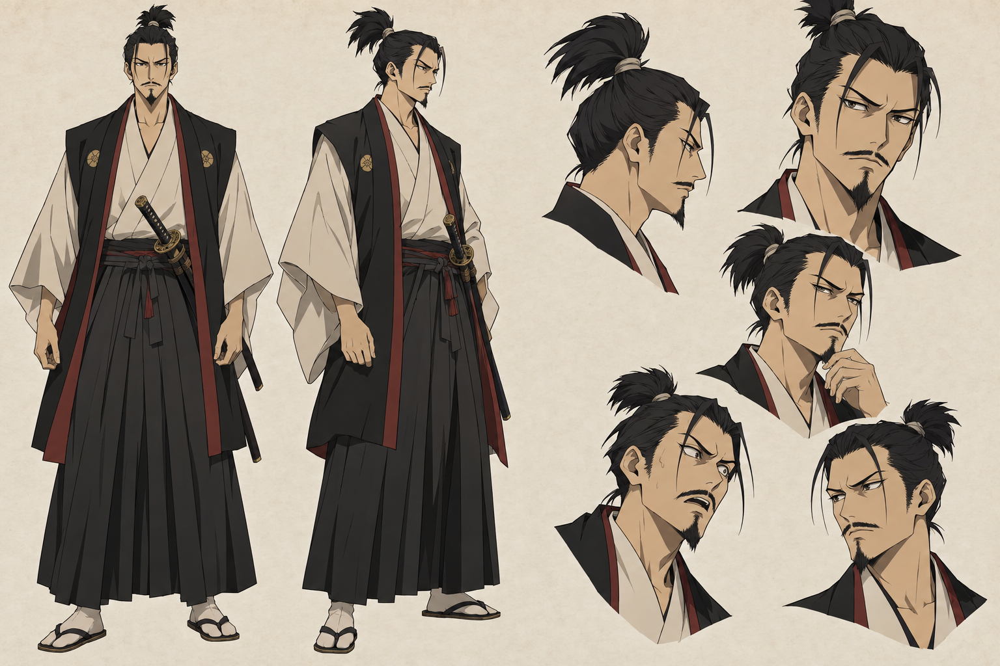
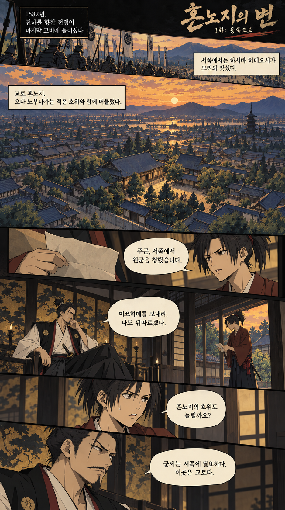
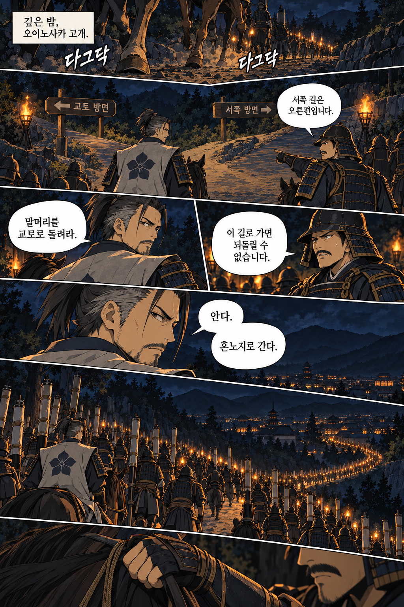
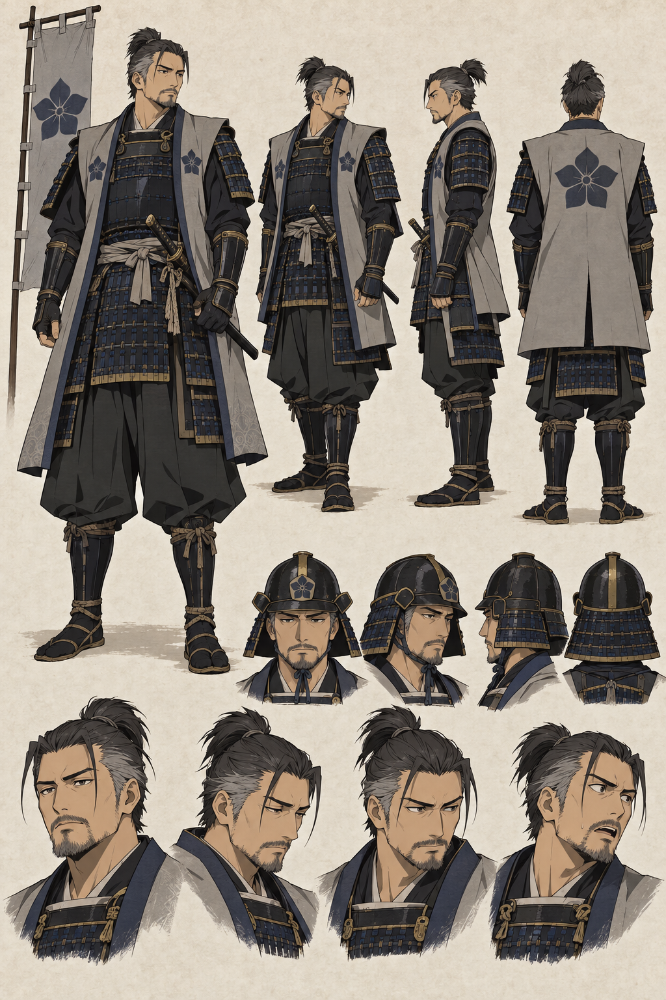
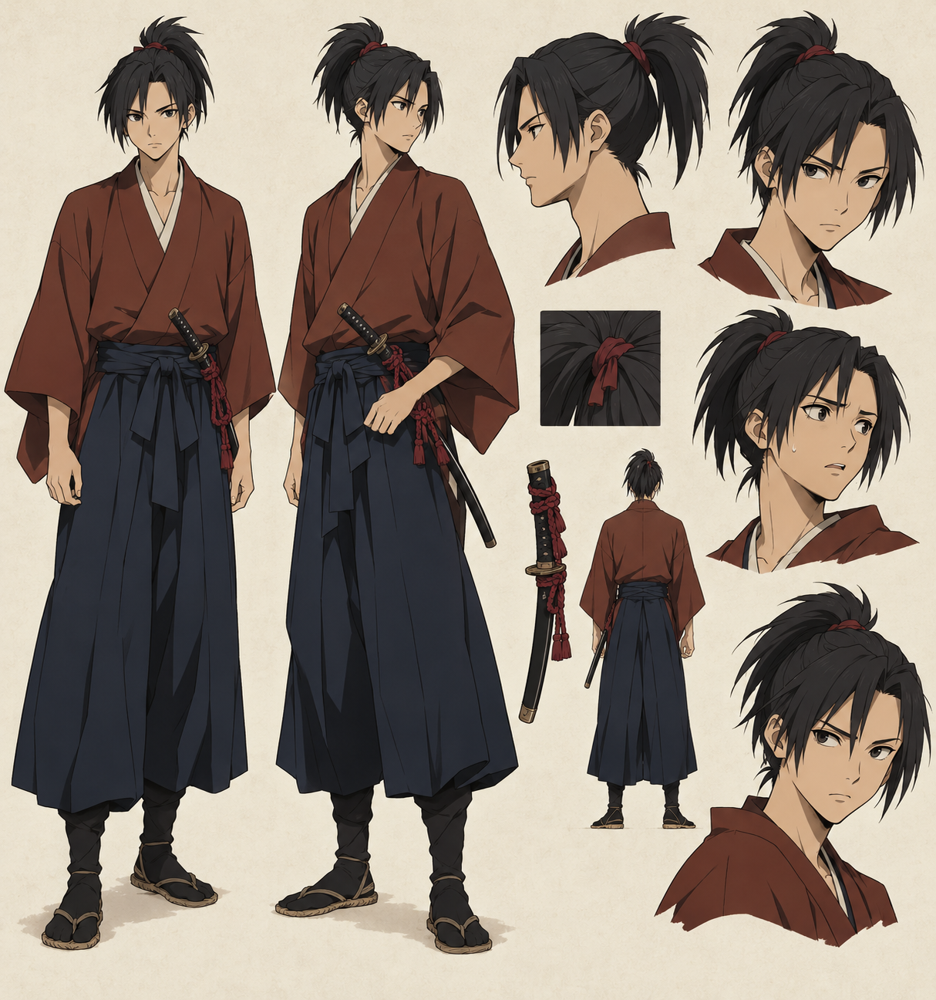

01 / 오다 가문
오다 노부나가
천하 통일을 눈앞에 둔 무장. 적은 호위와 함께 혼노지에 머문다.

EPISODE 01동쪽으로1582년, 오다 노부나가는 서쪽 전선을 돕기 위해 아케치 미쓰히데에게 출병을 명한다. 노부나가 자신은 적은 호위와 함께 교토 혼노지에 머무른다.
깊은 밤, 갈림길 앞에서 미쓰히데의 말머리가 움직인다. 그가 선택한 길의 끝에는 서쪽 전선이 아닌 혼노지가 있다.
실제 사건을 바탕으로 하되 인물의 대사와 세부 동선은 각색했습니다. 반란의 동기는 단정하지 않습니다.

노부나가가 머무는 혼노지. 그리고 밤의 갈림길에서 달라진 군세의 행선지.
읽기 시작
천하 통일을 눈앞에 둔 무장. 적은 호위와 함께 혼노지에 머문다.

서쪽으로 출병하라는 명을 받는다. 밤이 깊자 군세의 방향을 바꾼다.

노부나가를 가까이에서 모시는 시동. 새벽의 첫 이상을 마주한다.
1582 · 교토 · 혼노지